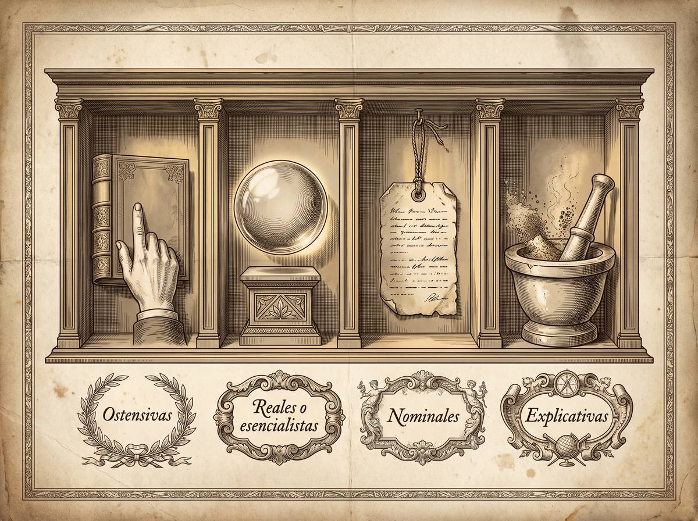

Subpuntos 1.2.4 y 1.2.5 · Teoría del Derecho y Filosofía · Concepto de Derecho y su objeto
Veinticinco siglos sin ponerse de acuerdo
La pregunta por qué es el derecho lleva abierta desde los griegos, y eso no es un fracaso de la disciplina: es información sobre su objeto. Lo que se decida que el derecho es determina cómo hay que estudiarlo. Elegir mal el objeto no lleva a una respuesta equivocada, lleva a usar el método que no sirve.
Prof. Carlos Eduardo Chica-Villacís Docente autor · Universidad Católica de Cuenca
Conviene deshacer un malentendido de entrada: la filosofía analítica no es una doctrina metafísica cerrada, sino una actitud y una herramienta. Huerta Ochoa, analizando la obra de Jorge Rodríguez, la describe como un estilo intelectual que prioriza la claridad en el uso del lenguaje y el rigor en la argumentación, se apoya en el análisis lingüístico y desconfía de las concepciones metafísicas.
Aplicado al concepto de derecho, el método analítico no busca descubrir una esencia oculta e inmutable. Hace una reconstrucción racional de los términos que ya usamos, y procede en tres movimientos.
No empieza de cero. Toma nociones que la comunidad jurídica acepta sin discutir: que el derecho tiene carácter social, porque regula la conducta de personas en comunidad, y carácter normativo, porque es prescriptivo, un deber ser.
Investiga los criterios de uso de los términos para eliminar dos vicios del lenguaje ordinario: la ambigüedad, cuando una palabra tiene varios significados, y la vaguedad, cuando el campo de aplicación no está bien delimitado.
En lugar de imponer una definición dogmática, determina cómo funciona el derecho en la realidad: qué entidades lo constituyen —normas, permisos, competencias— y qué relaciones lógicas guardan entre sí.
Cárdenas Gracia advierte que definir el derecho es difícil por tres razones que se acumulan: la historia del término, la pluralidad de perspectivas y la carga emotiva de sus fines. Y ordena el campo distinguiendo cuatro tipos de definición.

Definen mostrando. Ante la pregunta de qué es el derecho, se señala un volumen del código civil o las instalaciones de un juzgado. Su límite es evidente: carecen de generalidad y presuponen el concepto que pretenden explicar. El alumno ve el papel del código, no el vínculo normativo invisible que ese papel genera.
Vienen de la filosofía clásica y asumen que las palabras reflejan la sustancia inmutable de las cosas. Cárdenas Gracia, exponiendo a Kantorowicz, las llama realismo verbal o, más duramente, magia verbal: un seudoproblema heredado del mito de la caverna. En el derecho no hay esencias eternas, sino construcciones culturales y acuerdos que los seres humanos pueden modificar.
Se ocupan solo del nombre, sin esencias. Se dividen en lexicales, que describen cómo se usa de hecho una palabra en una sociedad, y estipulativas, que proponen un significado nuevo o restringen uno existente por precisión técnica.
Están en medio de las dos anteriores y son las idóneas para conceptos que ocupan un lugar central en una cultura. No registran todos los usos ni imponen uno arbitrario: condensan y reelaboran los significados usuales para fijar el núcleo más operativo. Pueden formularse en sentido histórico, buscando elasticidad para cubrir la complejidad temporal, o en sentido crítico, buscando nitidez lógica al comparar los modelos previos.
Apartado elaborado a partir de Cárdenas Gracia (2010), que expone a Kantorowicz.Aquí está la pregunta que ordena todo lo demás. ¿De qué se ocupa exactamente la filosofía del derecho? Hay tres respuestas en disputa.
Para el normativismo, cuyo paradigma es Kelsen, el objeto son las normas coactivas dictadas por el Estado y el análisis de su validez formal. El derecho se aísla deliberadamente de los hechos empíricos y de las valoraciones morales.
Para el realismo escandinavo —Olivecrona, Ross— y la sociología jurídica, el objeto es el comportamiento real de los operadores: el derecho en acción y los fenómenos de poder que de hecho determinan lo que deciden los jueces.
Cárdenas Gracia sostiene una tercera vía: el derecho no es solo un conjunto estático de reglas escritas ni meros hechos de poder. Es una práctica social dinámica que integra a la vez reglas, principios constitucionales de textura abierta, valores, procedimientos y —sobre todo— las conductas de quienes deliberan y justifican decisiones bajo una pretensión de justicia.
En epistemología jurídica funciona como una regla: el método depende del estatus que se atribuya al objeto. Y las consecuencias son concretas.
Si el derecho es una entidad ideal de significados normativos, el método será el análisis lógico-conceptual y deductivo: se estudia el lenguaje prescriptivo y las relaciones de inferencia entre normas.
Si es un hecho social e institucional, el método hay que tomarlo de las ciencias sociales empíricas — sociología, psicología — y buscará explicar de forma causal y predictiva las conductas de los jueces y la eficacia de las leyes.
Y si es una práctica argumentativa, el método deductivo tradicional se queda corto. Hace falta un método hermenéutico y valorativo, centrado en la ponderación y en la justificación de principios, donde las proposiciones no se constatan empíricamente sino que se validan mediante deliberación racional.
| El camino de la ciencia · Alexy | El camino de la práctica · Chazal | |
|---|---|---|
| Qué sostiene | El derecho aspira a la corrección mediante una pretensión discursiva racionalmente comprobable. | La neutralidad axiológica es una ilusión cientificista que desnaturaliza el objeto. |
| Qué método propone | Integrar norma, hecho y valor en un sistema racional coherente. | Tratarlo como ciencia práctica y prudencial, orientada a la acción. |
| Cómo se valida | Mediante reglas de argumentación y del discurso práctico. | En la discusión controversial: la verdad se decide dialécticamente. |
Conviene no cerrar esta tensión en falso. Alexy hace un esfuerzo formidable por reconstruir la disciplina como saber sistemático; Chazal responde que toda interpretación es un acto valorativo y que pretender lo contrario es engañarse. Ninguno de los dos es ingenuo, y el desacuerdo no se resuelve eligiendo el que suene mejor.
Apartado elaborado a partir de Alexy (2003) y Chazal (2012).Si reuniéramos a los cuatro autores para preguntarles por qué, después de veinticinco siglos, seguimos sin acordar qué es el derecho, cada uno daría una razón distinta.
Desde el aula
«Hay una manera de leer este apartado que lo vuelve desalentador: veinticinco siglos y no hay respuesta. Quiero proponerles la contraria.
Fíjense en lo que dice Huerta Ochoa, que es lo más útil que van a llevarse de aquí. Cuando alguien elige qué propiedades del derecho son las relevantes, ya está decidiendo filosóficamente, aunque crea que solo está describiendo. No hay un punto de vista neutro desde el cual mirar.
Eso tiene una consecuencia práctica inmediata. Cuando lean una sentencia, un artículo de doctrina o el alegato del abogado contrario, pregúntense qué está tratando el autor como objeto: ¿la norma escrita?, ¿lo que de hecho hacen los tribunales?, ¿la práctica de argumentar? Casi nunca lo dirá. Pero de esa elección tácita dependen sus conclusiones, y detectarla les va a servir más que cualquier definición que puedan memorizar.
Que la pregunta siga abierta no significa que dé igual la respuesta. Significa que cada quien responde con lo que hace, no con lo que dice.»